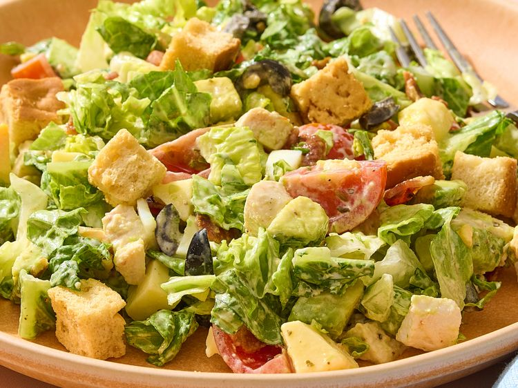

Home
Loaded Chicken Bacon Ranch Chopped Salad

Photo of bowl of Loaded Chicken Bacon Ranch Chopped Salad
Chicken Bacon Ranch Chopped Salad is a hearty, protein-packed, and creamy salad featuring chopped chicken, crispy bacon, ranch dressing, and assorted greens or vegetables (like romaine, tomatoes, and cheese)
Ingredients
- 2 tablespoons ranch dressing, or to taste
- 1/2 cup cooked chicken, cut into 1/2-inch cubes
- 2 tablespoons chopped black olives
- 1 large hard cooked egg, peeled and chopped
- 1 ounce hard cheese, such as Gouda, chopped or shredded
- 1/2 cup cherry tomatoes, quartered
- 1/2 small avocado, chopped
- 2 slices cooked bacon, chopped
- 2 cups chopped Romaine lettuce
- Salt and freshly ground black pepper, to taste
- Croutons, to taste (optional)
Steps
- Place ranch dressing in the bottom of a salad bowl, and thin with water if desired.
- Add chicken, black olives, egg, hard cheese, cherry tomatoes, avocado, bacon, and Romaine lettuce to the bowl. Toss, being careful to pull up the dressing from the bottom.
- Sample and season with salt and pepper.
- Pour salad onto a plate, garnish with croutons, and serve immediately.